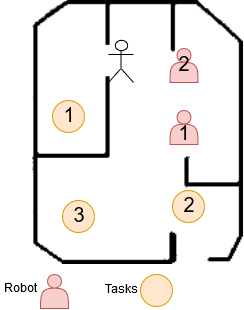
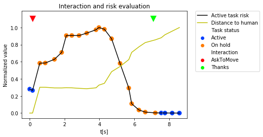

Overview
The integration of mobile robotic agents in a human populated environment is a long-time goal in social robotics. However, navigating next to human present multiple questions: How should a robot react when a human is blocking its path? Should robots be considered as "second class citizens", and always avoid or make way for the humans?

Project Goals
This project aims to integrate HRI in the task allocation loop for a team of robot performing navigation tasks alongside humans and evaluate the impact of the interaction on the team performance. This performance has been compared to a more conservative approach, where robots would avoid humans, switching task if a human is detected.
Approach
For that matter, I extended the work done on my semester project, which aimed to integrate HRI to a single robot navigation scenario, by using speech, leds and head gaze on a mbot from the MOnarCH project. In order to be able to evaluate the impact of each human on the robot plan, I used the risk estimation method developed by my supervising assistant (Z. Talebpour), which computes the distance between humans and the trajectory planned by the robot.
Then, instead of changing its goal if the risk is rising (a human is getting closer), the robot would interact with the human, by gazing towards him, and asking him to move, thanks to pre-recorded speech samples. The robot will then wait for the human to move during a set amount of time. If the human moves and allow the robot to pass through during this period, the robot will proceed, otherwise it would change its goal.
Additional Features
In addition to this key interaction, I implemented multiple features, such as gaze tracking of a human, detection of social human groups via clustering, to be able to have more meaningful interactions.

Results
In the end, I was able to evaluate the impact of the interaction, assuming that the humans would respond positively to the robot request. The results obtained are encouraging, and we observe that HRI allows improve the scenario completion time, and reduce the distance travelled by each robot.
Unfortunately, I could not test the impact of the interaction on the human perception of the robot, as the experiments have only been done with subjects internal to the project.
The application of HRI to MRTA looks like a promising way to increase the performance and the social acceptance of robots. Additional work is still needed in order to extend the showcased interaction to more complex scenarios.